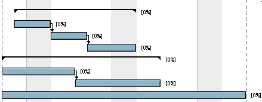

GanttProject - Relationships
Ganttproject allows you to specify a relationship between two tasks. You can set them
by dragging directly on the chart. Click and hold on the first task and moving the cursor
to the second task. An arrow will appear, following the mouse. Drag the arrowhead
to the second task and release the mouse.
The second task will be dependent on the first one. You will have a chart like this:
